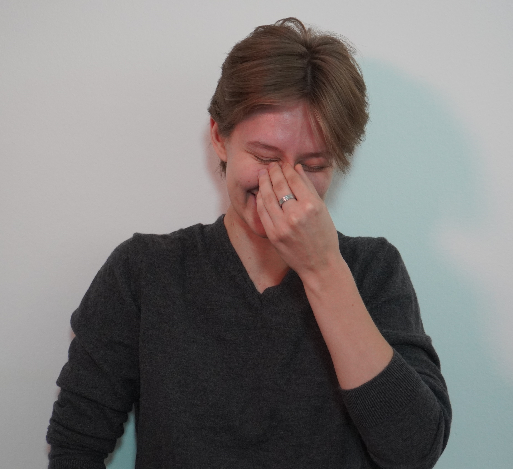

Shawn E. S. Skelton
About Me

Professionally, I am a PhD student in the quantum information group at the University of Leibniz in Hanover. I am also studying for a MA in philosophy of science. Personally, I am a Canadian living in Germany and an inveterate literature nerd. This website is a collection of my writing and some resources related to my work.
It is a work in progress, but frankly so is my life.